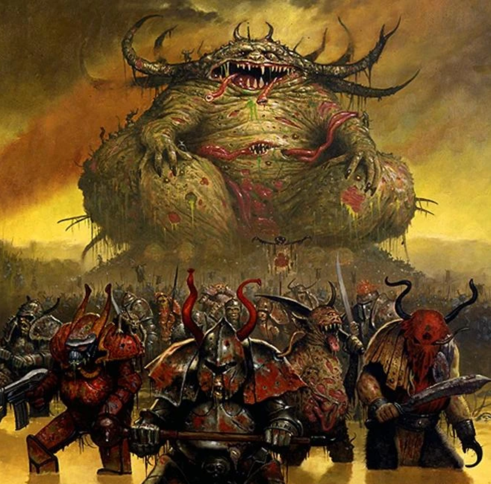
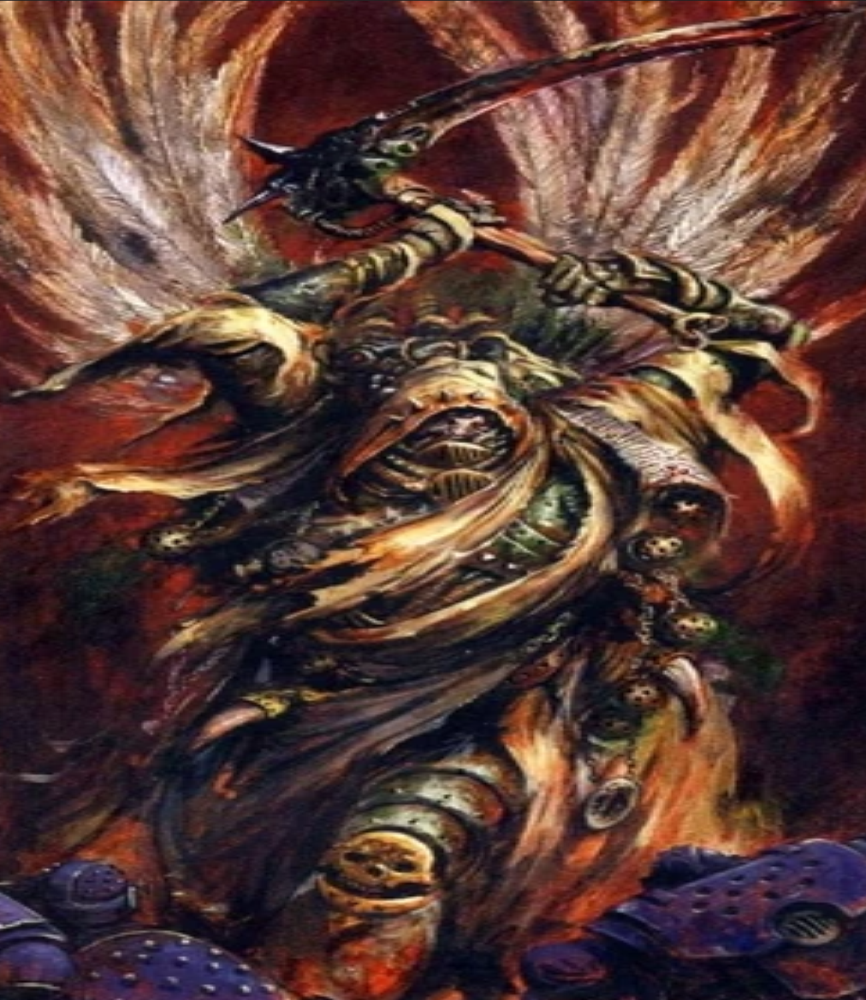
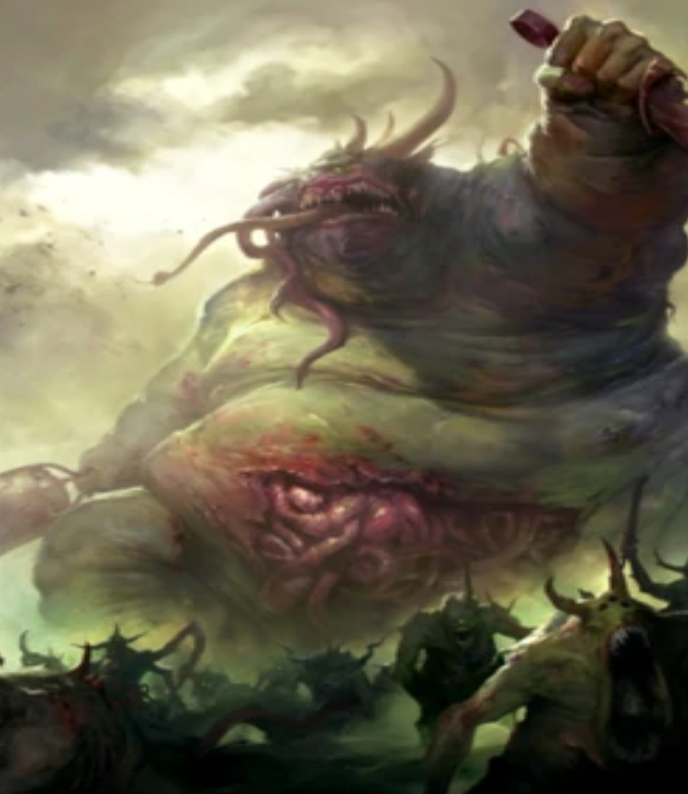
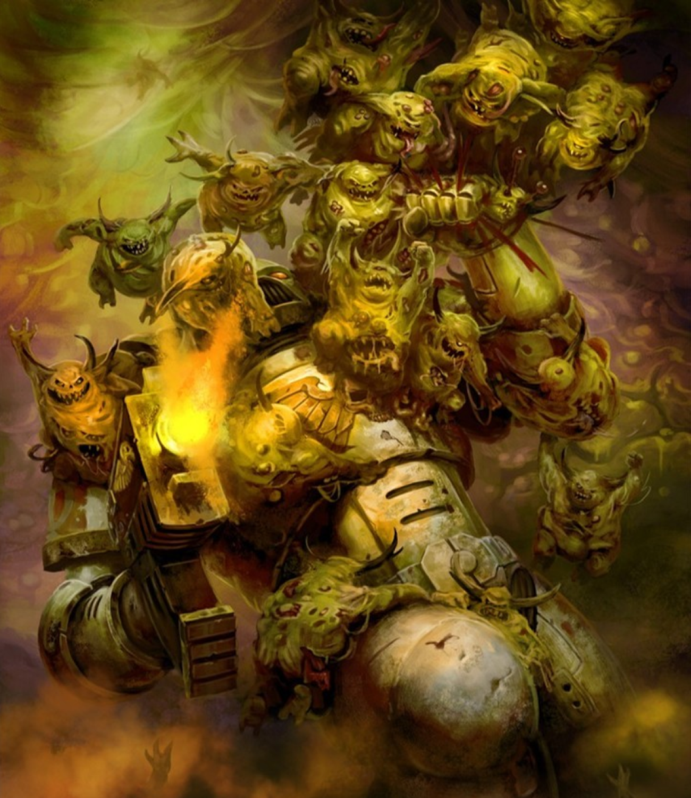

 "Nurgle, also known as the "Plague Lord," "Grandfather Nurgle," or the "Plague God," among many other honourifics, is the Chaos God of disease, decay, despair, destruction, death and rebirth. In particular, the emotion of despair in mortals empowers the Plague God more than any other. Nurgle is known also as the "Lord of Pestilence," the "Fly Lord," "Plaguefather," and the "Lord of Decay." It is the third of the Chaos Gods to fully awaken within the Warp, emerging during the 2nd Millennium in the midst of Old Earth's European Middle Ages, as great plagues swept across the world heralding the god's birth. Nurgle is the Chaos God most directly involved with the plight of mortals, particularly Humans who suffer so acutely from a fear of death, perhaps the oldest fear of that species, or any other. While Nurgle is the god of death and decay, it is also the god of rebirth. Decay is simply one part of the cycle of life, without which no new life could grow. In the same way, Nurgle is also the god of perseverance and survival. While those who wish to spread decay and corruption are certainly amongst its followers, there are also those who wish to endure, to become resilient enough to handle the difficulties and opportunities presented by an uncaring universe. Many of those affected by Nurgle's poxes usually turn to the god in order to escape the pain and sheer despair caused by sickness and disease."
"In leading the Death Guard into the Warp, Typhon had delivered them into the clutches of his new master, Nurgle, the Lord of Decay. The strange tides of the Empyrean are notoriously fickle, and during their voyage the entire fleet was becalmed. As their warships lingered, directionless and without hope, the cloying influence of Grandfather Nurgle began to take hold. The Death Guard were subjected to the terrible infection of the Destroyer Plague and Nurgle's Rot, as Nurgle's power managed to infiltrate the vessels of the XIV Legion. It polluted the vessels themselves as easily as it did the warriors within. Before long, fat devil-flies buzzed through the thickening miasma inside each warship. Where they bit at the desperate warriors trapped within, flesh turned to suppurating jelly. The daemon-venom of their stings caused flesh to blossom into hard new growths. Bellies distended and eyes ran like cracked eggs; even Power Armour melded and flowed into strange new shapes. Here, the superhuman resilience of the Death Guard proved their enemy, for they could not simply die, nor were they allowed to do so by the Plague Lord. Instead, they were slowly, sickeningly transformed into Plague Marines, their souls claimed by Nurgle in exchange for a permanent release from their pain. Typhon, having orchestrated this grand corruption, was rewarded most of all."
"For ten thousand standard years Typhus has been a blight upon Imperial worlds. He unleashed Nurgle's Rot upon Carandinis VII and Protheus, instigated the Jonah's World pandemic, and has killed millions with the Destroyer Hive. In the wake of Typhus' fleet a virulent plague spreads, causing its victims to suffer a long, agonising demise. Those who fall to this Warp disease do not stay dead, however; their bodies are soon reanimated by the Chaos infection, creating Plague Zombies whose bites carry the disease to new victims. Billions have died and been returned to undeath. Worse still, since the opening of the Great Rift during the 13th Black Crusade, the proliferating energies of Chaos have mutated countless strains of the original Zombie Plague. Boasting infection vectors as esoteric as nightmares, groans of misery and the surrender to despair, they have created many new types of Plague Zombie to bedevil the Imperium, of which the most common by far are the leering, moaning Poxwalkers. Typhus rules the greater portion of the Death Guard's decaying armada from the bridge of his flagship, the Terminus Est, a warship encrusted with the filth of aeons that was ancient even when the Horus Heresy began some ten thousand standard years ago. His skill in ship-to-ship combat has been honed over many millennia of war, and when he broods in his command throne upon his starship's bridge, he and the titanic war machine become one. Though the warship exists on the cusp of Imperial legend, its three-pronged pict-sign is dreaded by admirals and Planetary Governors alike across the Segmentum Obscurus. Wherever Typhus' flagship appears, it heralds plague, death and misery on a system-wide scale. Even whispers of its coming can cause panicked evacuations from worlds in its path, for wherever Typhus goes, pain and despair blossom in his wake. "
Traitorous Primarch - Mortarion
Mortarion, also known as the "Pale King," the "Death Lord" or the "Prince of Decay" after he turned to Chaos, was one of the original twenty Imperial primarchs created by the Emperor of Mankind. He was given command of the Death Guard Space Marine Legion on the arrival of the Emperor to his homeworld of Barbarus, but he turned to the service of Chaos during the Horus Heresy. At present, Mortarion is the greatest Daemon Prince of Nurgle and the Daemon Primarch of the Death Guard Chaos Space Marines. He recently returned to Imperial space for the first time in ten thousand standard years when he led the forces of the Plague God in the invasion of the Realm of Ultramar during the Plague Wars.
Greater Demon
A Great Unclean One is a grotesquely corpulent Greater Daemon of the Plague God Nurgle, the Chaos God of disease, death and decay. These loathsome Daemons are the harbingers of the lord of rot and ruin, and amongst Grandfather Nurgle's greatest servants, bearers of his most sacred plagues and poxes. Their forms are squat and mountainous, covered in rotting flesh and open sores that weep foul rivulets of pus. Hot ropes of intestines dribble out of huge tears in their enormous, bloated and distended bellies. This horrific girth is supported by two impossibly small and atrophied-looking legs, and their inordinately large, bulbous heads are crowned by enormous stag-like antlers. To the mortal eye, a Greater Daemon of Nurgle is undoubtedly the foulest of all the daemonic servants of the Ruinous Powers. Each of these Great Unclean Ones is shaped in the fashion of Nurgle himself; flyblown, maggot-ridden innards spill into view through the tears and gashes in his swollen belly as he lumbers forwards. Clusters of pustules and weeping buboes erupt from his hide, birthing small swarms of giggling Nurglings. Noxious juices seep from dozens of infected sores, leaving a glistening trail of mucus in the Great Unclean One's wake. Few mortals have the stomach, let alone the will, to oppose such a being.
Lesser Demon
Their forms are squat and mountainous, covered in rotting flesh and open sores that weep foul rivulets of pus. Hot ropes of intestines dribble out of huge tears in their enormous, bloated and distended bellies. This horrific girth is supported by two impossibly small and atrophied-looking legs, and their inordinately large, bulbous heads are crowned by enormous stag-like antlers. To the mortal eye, a Greater Daemon of Nurgle is undoubtedly the foulest of all the daemonic servants of the Ruinous Powers. Each of these Great Unclean Ones is shaped in the fashion of Nurgle himself; flyblown, maggot-ridden innards spill into view through the tears and gashes in his swollen belly as he lumbers forwards. Clusters of pustules and weeping buboes erupt from his hide, birthing small swarms of giggling Nurglings. Noxious juices seep from dozens of infected sores, leaving a glistening trail of mucus in the Great Unclean One's wake. Few mortals have the stomach, let alone the will, to oppose such a being.